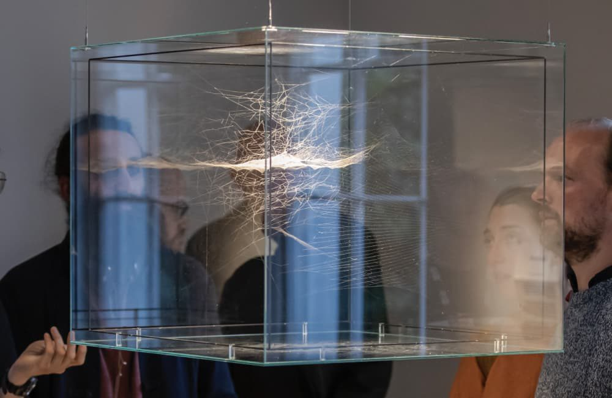

Studio update
Toolkits underway for Tailte Éireann’s 1,100 staffToolkits underway for Tailte Éireann’s 1,100 staff
Grace Mc Ginn · Tailte Éireann
Research with the public
Interviews, diaries and workshops that show how people really live with a service or an idea.
Co-design workshops
Sessions where staff and the public shape the work together, in person or online.
Provotypes
Quick, rough versions of an idea, made to start a conversation rather than to be finished.
Testing small
Trying an idea with a few people before anyone commits money or time to it.
Futures
Looking ten years ahead to test today’s plans, in our What if…? series and with clients.
Most Irish citizens are unaware of how their daily digital activities generate data that is tracked, consolidated and sold by private data brokers.
Read the project




Want to try an idea out before you commit?
Karl Toomey, Labs Director